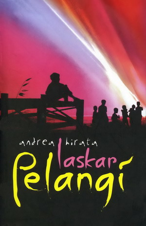
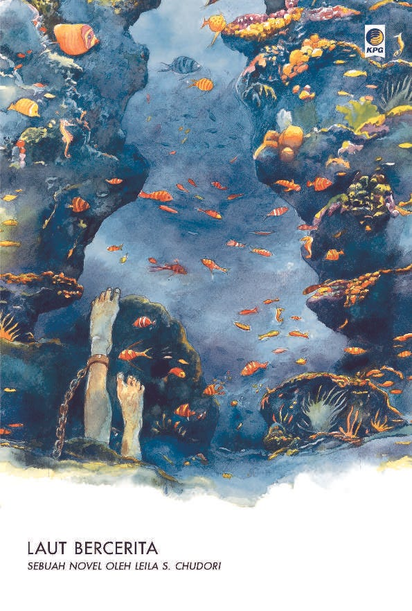
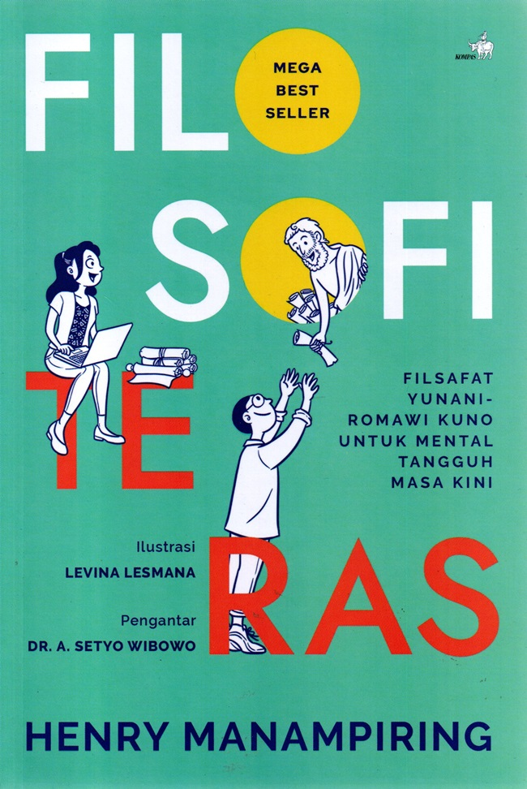
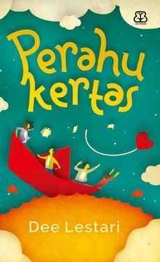

| Gambar |
Deskripsi |
Kutipan |
 |
Judul: Laskar Pelangi
Penulis: Andrea Hirata
Penerbit: Bentang Pustaka
Tahun: 2005
|
"Hiduplah untuk memberi sebanyak-banyaknya, bukan untuk menerima sebanyak-banyaknya" |
 |
Judul: Laut Bercerita
Penulis: Leila S. Chudori
Penerbit: Kepustakaan Populer Gramedia
Tahun: 2017
|
"Yang paling menyakitkan adalah kehilangan tanpa kepastian" |
 |
Judul: Filosofi Teras
Penulis: Henry Manampiring
Penerbit: Kompas
Tahun: 2018
|
"Kita tidak bisa mengontrol apa yang terjadi, tapi kita bisa mengontrol bagaimana kita bereaksi" |
 |
Judul: Perahu Kertas
Penulis: Dee Lestari
Penerbit: Bentang Pustaka
Tahun: 2009
|
"Mimpi itu harus diperjuangkan, bukan hanya dipikirkan" |
 |
Judul: The Power of Habit
Penulis: Charles Duhigg
Penerbit: Random House (Indonesia: Gramedia/KPG)
Tahun: 2012
|
"Perubahan mungkin tidak cepat dan tidak selalu mudah. Tapi dengan waktu dan usaha, hampir semua kebiasaan bisa diubah" |